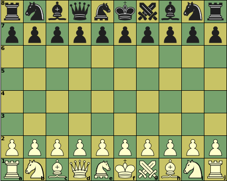

|  |
Initial setupf1, f8: King |
| Piece | ID | value | Moves (Betza notation) | Remarks |
| King | K | - | WF | Can castle with Rook, moving 2 steps towards it |
| Queen | Q | 9.5 | WWFF | |
| Chancellor | C | 9 | WWFF | |
| ArchBishop | A | 8.75 | WWFF | |
| Rook | R | 5 | WW | |
| Bishop | B | 3.5 | FF | Color-bound |
| Knight | N | 3 | N | |
| Pawn | P | 1 | mfWcfF | Promotes to Q, R, B, or N on reaching last rank |
A King that has not moved before can move two squares in the direction of a Rook that has not moved before, in which case that Rook is moved to the square the King skipped over. This is only allowed when the King is not in check, on the square it came from and would not be in check on the square it skipped over.
None.
It is not possible to force checkmate on a bare King with just a single Bishop or Knight (in addition to your own King).
Bishops are confined to squares of a single color. Having Bishops on both colors compensates this weakness, and is worth an extra 0.5 on top of their added value.
As Chancellor and Queen are nearly equal in value to Queen, under-promotion is very common.